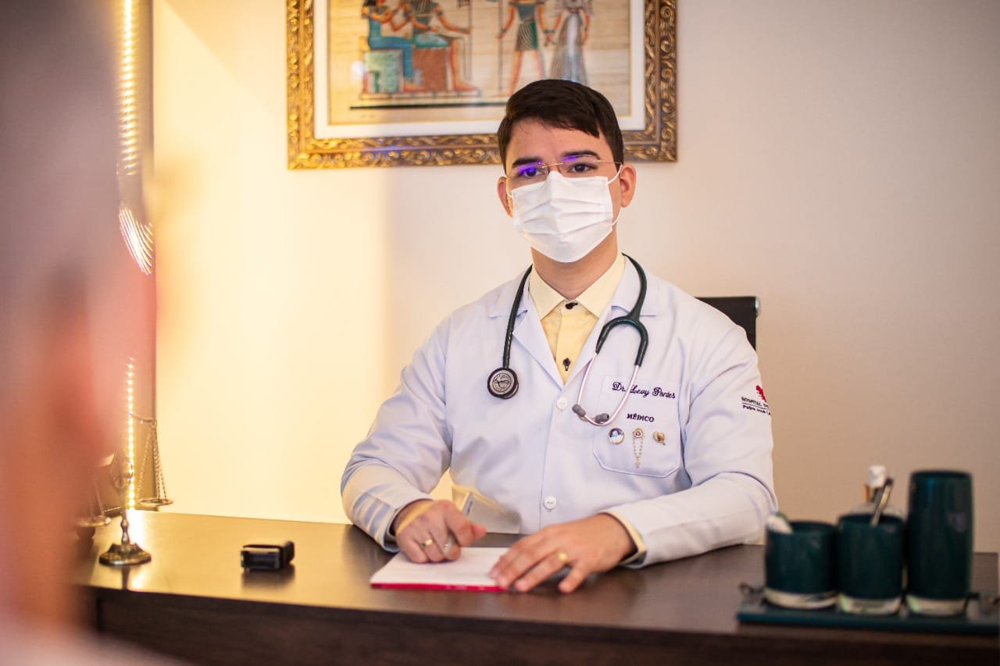

Atendimento Médico


Medicina Interna • Diagnóstico Clínico
Consulta médica detalhada com abordagem humanizada
Agendar consulta
Dr. Levy de Aguiar Pontes é especialista em Medicina Interna com atuação focada em diagnóstico clínico detalhado e acompanhamento integral do paciente.
Possui pós‑graduação em Geriatria pelo Hospital Israelita Albert Einstein e dedica sua prática à avaliação clínica cuidadosa e medicina baseada em evidências.
Avaliação detalhada dos sintomas e histórico médico.
Análise cuidadosa de exames e sinais clínicos.
Seguimento médico personalizado.
Avaliação preventiva e monitoramento da saúde.
Atendimento particular em Fortaleza